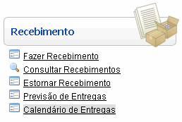
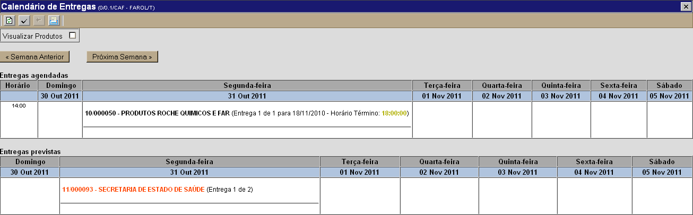
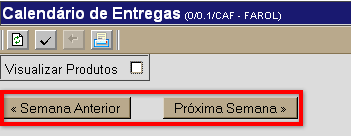
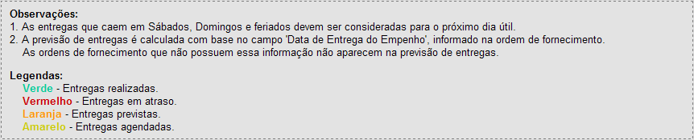
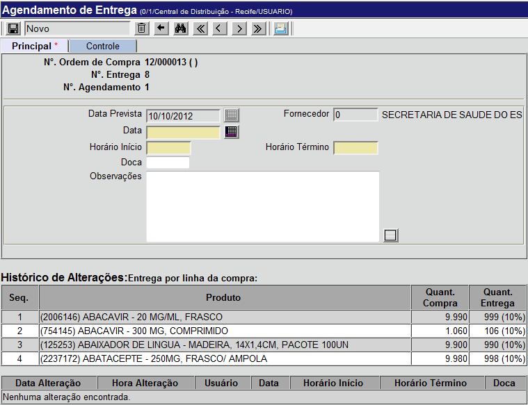

Calendário de Entregas [ Voltar ]Utilize este calendário semanal para visualizar todas as entregas programadas. Aqui, o usuário também poderá agendar as entregas previstas para uma outra data ou horário agendada com o fornecedor. O formulário "Calendário de Entregas" encontra-se dentro do menu "Recebimento". 

Nesta tela é possível visualizar as entregas programas para a semana corrente. Abaixo do dia da semana, são exibidas informações como o número da ordem de compra, nome do fornecedor e produtos da entrega. Para visualizar a programação de entregas de uma outra semana, clique em "Semana Anterior" ou "Próxima Semana". 
Na parte inferior da tela são exibidas observações adicionais e legenda de cores para melhor interpretação da tela:  Agendar nova data de entregaPara agendar uma nova data de entrega combinada com o Fornecedor, siga os passos abaixo:1º Passo: clique na entrega que deseja agendar. As entregas não-agendadas são exibidas na seção "Entregas previstas", na parte inferior da tela, e são exibidas em vermelho. Ao clicar em uma das entregas, a tela "Agendamentos de Entrega para a Ordem de Compra" será exibida.  Caso a entrega já tenha sido recebida, os dados desta tela estarão disponíveis apenas para leitura. 2° Passo: preencha os dados para agendamento. Os campos em amarelo são obrigatórios.
3° Passo: clique no botão  para salvar o agendamento. para salvar o agendamento. |
 para selecionar a data
desejada. Dicas para preenchimento de campos de data:
para selecionar a data
desejada. Dicas para preenchimento de campos de data: